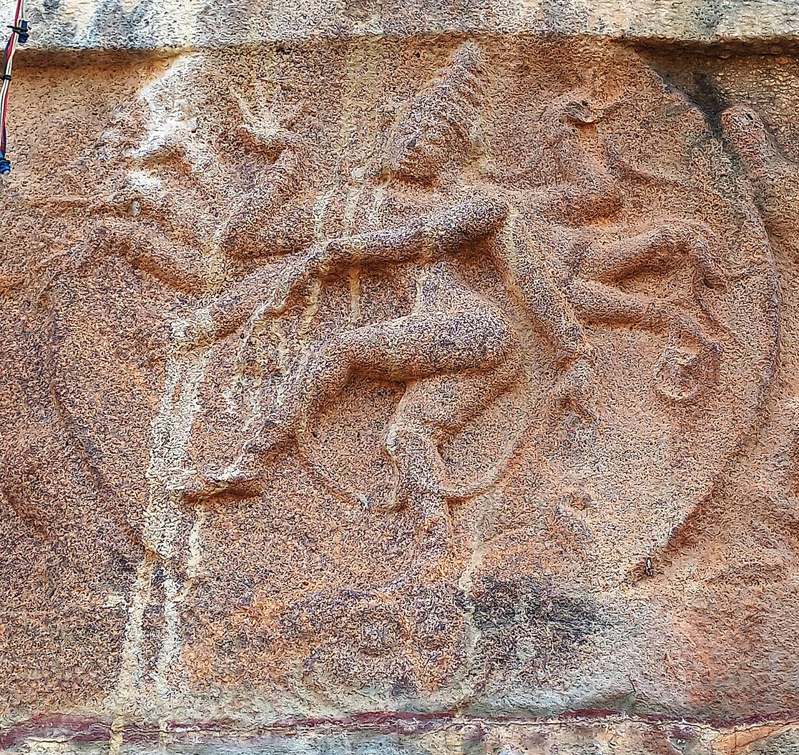

Wikimedia Commons · CC BY 4.0 ⇗
Sthala Puranam
On the southern face of the Nallamala hills of Andhra, the Srisailam kshetra is home to the Jyotirlinga of Mallikarjuna Swamy and the Shakti Peetha of Bhramarambika, joined in one mountain. The name joins 'Mallika' (Parvati) with 'Arjuna' — Shiva — the Lord of the mountain.
Explanation
One legend recounts how Shiva and Parvati, in order to be alone while Shiva revealed higher teachings, placed Kartikeya with his peacock at the hill of Krouncha; the boy, grieved at being left out, flung himself (or circled) — and Srisailam, the hill where Shiva himself resides, came to be called Krouncha by the Puranas for the moment when the peacock's son returned. The main temple faces south, home of the Nandikeshwara, and the complex preserves remarkable sculpture. Srisailam is both a Jyotirlinga and a Shakti Peetha, a rare double seat.
Why the temple is revered
'Sri Shailam' resounds in both the Jyotirlinga and the Shakti Peetha stotrams. Devotees believe the Lord here grants liberation and is especially affectionate to those who have renounced pride. Each year the Mahashivaratri jyotirlinga procession up the mountain is among Andhra's largest and most moving pilgrimages.
🕉 Story
Mallikarjuna is traditionally associated with Shiva at Sri Shaila. The temple is connected with the story of Shiva and Parvati and the sacred Nallamala hills.
✨ Significance
It is one of the twelve Jyotirlingas and the same sacred complex is associated with Bhramaramba.